Chapter 4 Visualization
This lesson is about creating effective data visualizations using the ggplot2 package (part of the Tidyverse). Becoming good at graphing your data is a key skill you will want to develop while in the PhD program. Each graph you make should clearly communicate an insight without overloading your audience with too much information. Today we will practice the nuts and bolts of the coding necessary to accomplish this.
Let’s start by loading in our external packages: the Tidyverse, and here.
We will load in the same “county_elections.csv” data set from the previous chapter. Note: we will also remove each row in the data set containing missing values so that we avoid being spammed with warning messages from R. In a real data analysis project, you will want to investigate the source of missing data rather than blanket-removing everything.
county_elections <- read_csv(here("data", "county_elections.csv"))
# Remove any rows with missing values to avoid warning messages
county_elections <- na.omit(county_elections)4.1 Univariate Graphs
The first graph we will make is a histogram. Histograms are the most common type of graph for continuous variables and make it easy to see the spread and central tendency of the data. Let’s plot the distribution of county median household income using the variable median_hh_inc in county_elections.
## `stat_bin()` using `bins = 30`. Pick better value with `binwidth`.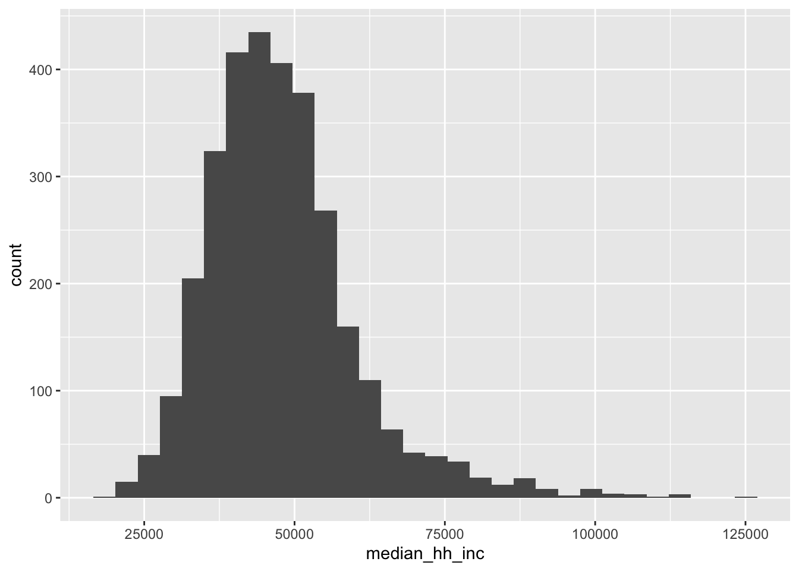 Each graph you create using ggplot will contain the following three elements
- Data. You need to tell ggplot which data set the variables that you want to graph come from. This section is
ggplot(county_elections)in the code above. - Aesthetics. Now that we know which data set we’re working with, which variables do you want to use and in what way do we want them to be used? This information goes in the
aes()section. Because histograms typically view the distribution of a single variable along the x-axis of a graph, we specify our aestheticaes(x = median_hh_inc)in the code above. - Geoms. The “geom” we choose defines the type of graph we’re ultimately creating (histogram, scatter plot, bar graph, etc). As you might expect,
geom_histogram()creates a histogram for us!
In ggplot we combine these elements together using the + symbol. You could put the data, aesthetics, and geom sections all in the same line of code. But it is good practice to put each on its own line to make your code more readable.
Each geom in ggplot has tons of extra options (also called arguments), which you can specify to make your graphs more pretty. Let’s begin to customize our histogram!
ggplot(county_elections) +
aes(x = median_hh_inc) +
geom_histogram(bins = 50,
color = "white",
fill = "steelblue") Wow look at that! Now let’s fix the ugly default names on the x and y axes, and add an informative title for our graph. We add custom labels to a ggplot graph by adding another
Wow look at that! Now let’s fix the ugly default names on the x and y axes, and add an informative title for our graph. We add custom labels to a ggplot graph by adding another + followed by a labs() section.
ggplot(county_elections) +
aes(x = median_hh_inc) +
geom_histogram(bins = 50,
color = "white",
fill = "steelblue") +
labs(title = "Distribution of Median County Incomes",
x = "Median Household Income",
y = "Count")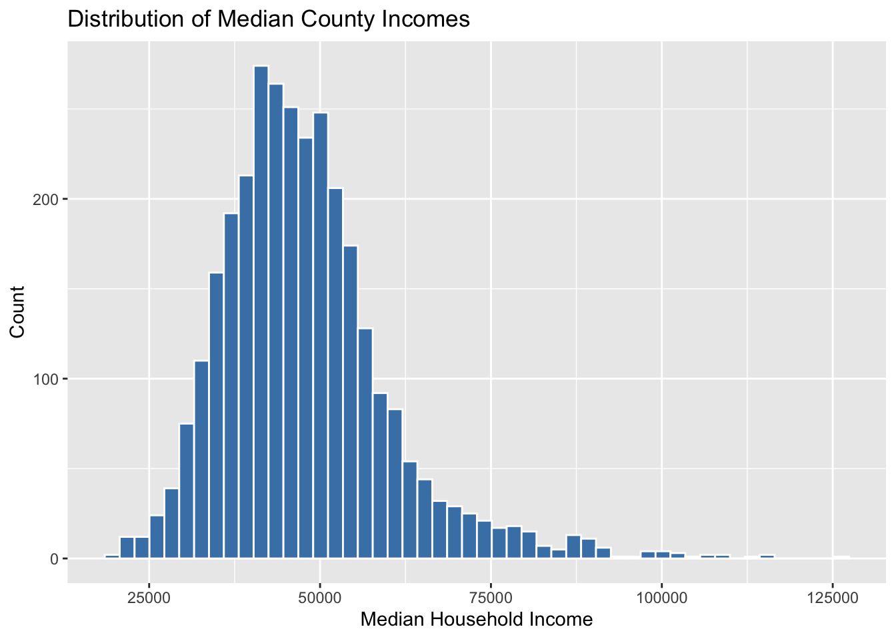
Themes in ggplot control the overall look and background style of our graphs. For a complete list of themes: Link. There is also a package with a bunch of additional cool themes you can check out here: Link. Personally I’m a big fan of theme_minimal().
ggplot(county_elections) +
aes(x = median_hh_inc) +
geom_histogram(bins = 50,
color = "white",
fill = "steelblue") +
labs(title = "Distribution of Median County Incomes",
x = "Median Household Income",
y = "Count") +
theme_minimal()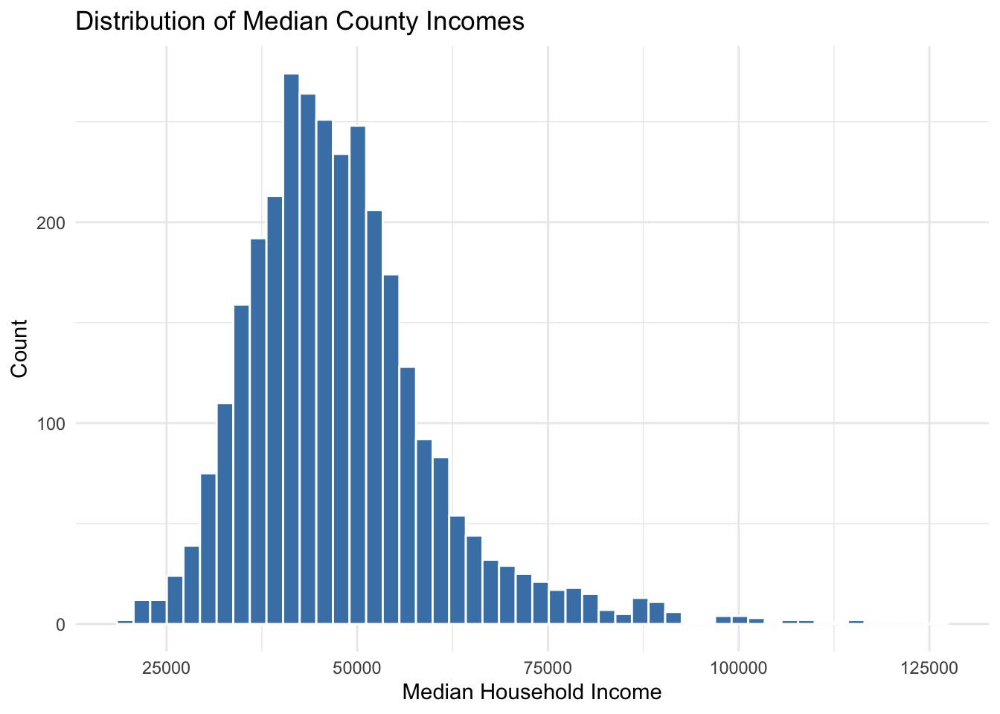
Our county median household income variable looks like it’s a bit right-skewed—with a few extremely high income counties shown on the right hand side of the graph. Depending on your research question, it might make more sense to view this distribution on the log scale. It’s very easy to do this in ggplot using scale_x_log10().
ggplot(county_elections) +
aes(x = median_hh_inc) +
geom_histogram(bins = 50,
color = "white",
fill = "steelblue") +
labs(title = "Distribution of Median County Incomes",
x = "Median Household Income",
y = "",
caption = "(log10 scale)") +
theme_minimal() +
scale_x_log10(labels = scales::dollar) Now the data looks almost normally distributed. Also note the use of
Now the data looks almost normally distributed. Also note the use of scales::dollar to make our x-axis a little easier to read. The scales package provides a ton of handy functions to deal with ugly default scales in ggplot. The :: operator is a way of accessing a single function from a package without loading all its other functions into R. It’s also a way of being explicit about which package’s function you are using. Sometimes you will run across situations where multiple packages have functions with the same name, but which do different things! Speaking from personal experience, this can lead to some really frustrating debugging sessions.
4.2 Bivariate Graphs
If histograms are the most common way to plot the distribution of a single continuous variable, scatter plots are the most common way to show the relationship between two continuous variables. Translating our histogram ggplot code to a scatter plot is straightforward: simply add a y-axis variable to aes(), and change the geom to geom_point(). The graph below displays the relationship between median household income and the population percentage in a county who did not complete high school.
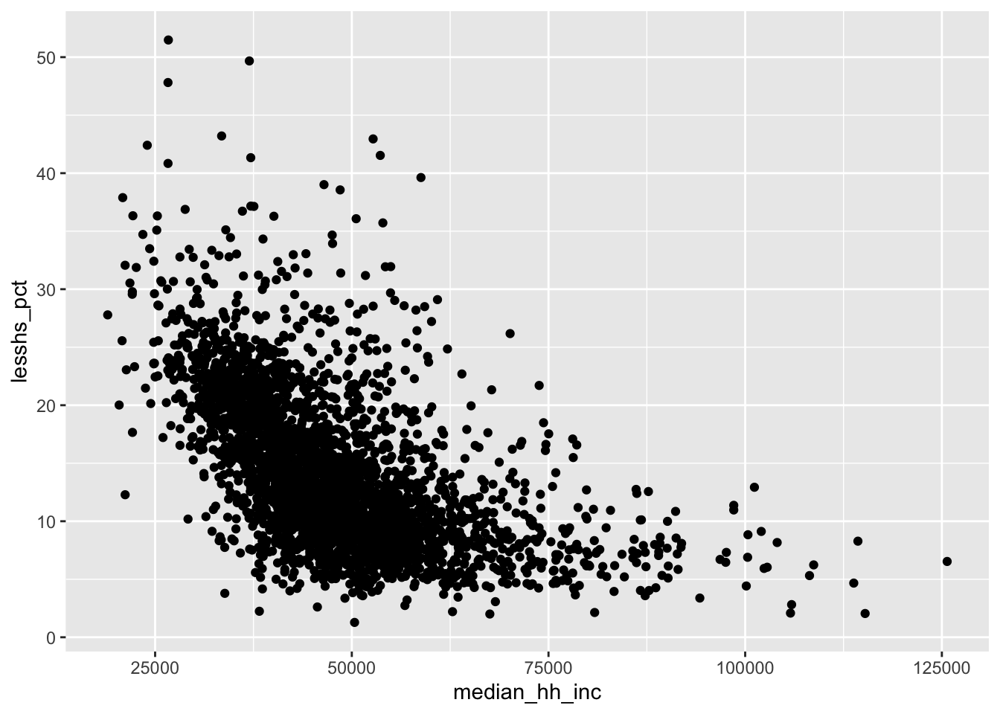
It looks like richer counties have lower rates of their population having less than a high school education. We can use the same customization options from histograms on our scatter plot to make things prettier.
ggplot(county_elections) +
aes(x = median_hh_inc, y = lesshs_pct) +
geom_point() +
labs(title = "US Counties by Education and Income",
x = "Median Household Income",
y = "Less than High School %") +
scale_x_continuous(label = scales::dollar) +
theme_classic()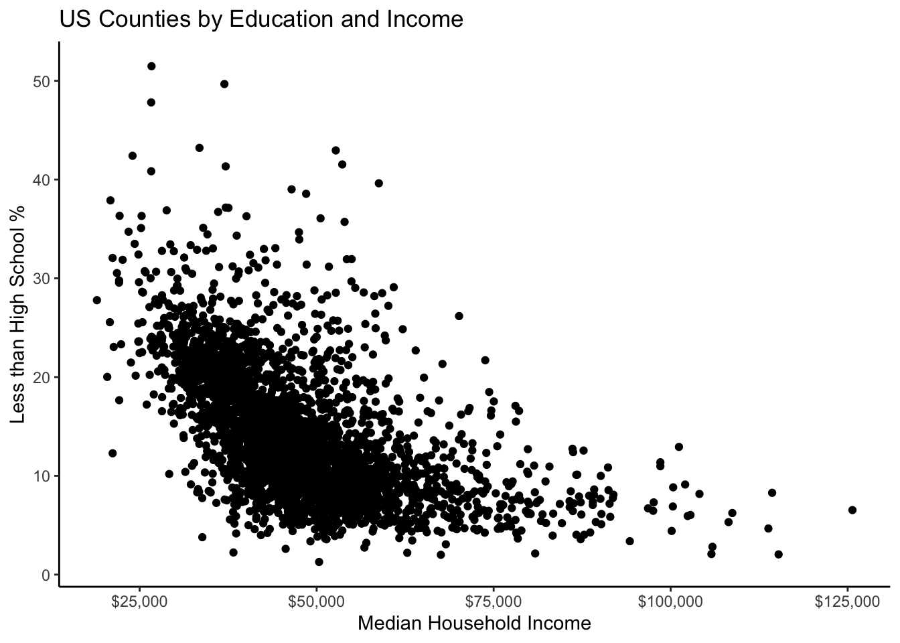
A lot of our data seems to be clustered up together. The solid points in geom_point() obscure this density so let’s fix this using the alpha argument. A geom’s alpha level specifies its transparency and ranges from 1 (solid) to 0 (invisible).
ggplot(county_elections) +
aes(x = median_hh_inc, y = lesshs_pct) +
geom_point(alpha = 0.2, color = "darkcyan") +
labs(title = "US Counties by Education and Income",
x = "Median Household Income",
y = "Less than High School %") +
scale_x_continuous(label = scales::dollar) +
theme_classic()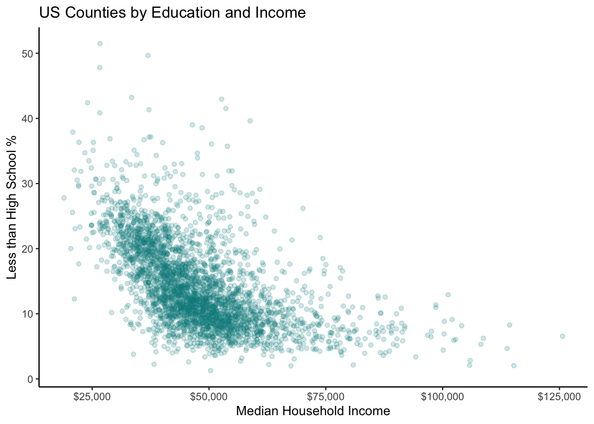
The negative relationship between our two variables is clear just by eyeballing it, but if we want to be real scientists we need to add the magic regression line. If you are unfamiliar with regression lines, don’t worry—we will be covering them extensively in your introductory quantitative methods course. A linear regression line is essentially just the “best fitting” straight line to the data.
Adding a regression line to the graph gives us our first opportunity to combine multiple geoms. In the code chunk below, notice how we simply use + to add geom_smooth() to our ggplot object. This overlays a fitted line on top of the dots from geom_point(). The argument method = "lm" tells ggplot to use a linear regression line (lm = “linear model”) as opposed to some other type of fitted line.
ggplot(county_elections) +
aes(x = median_hh_inc, y = lesshs_pct) +
geom_point(alpha = 0.2, color = "darkcyan") +
geom_smooth(method = "lm", color = "black") +
labs(title = "US Counties by Education and Income",
x = "Median Household Income",
y = "Less than High School %") +
scale_x_continuous(label = scales::dollar) +
theme_classic()## `geom_smooth()` using formula 'y ~ x'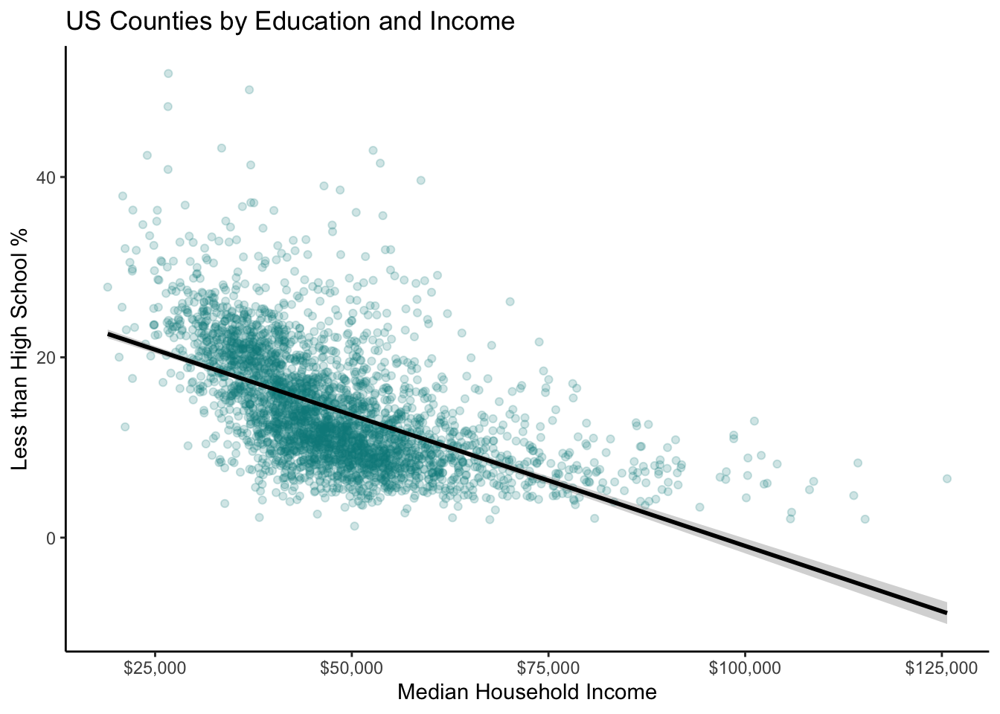
This graph would look way more professional if it didn’t mistakenly predict negative high school percentage values for high income counties. Linear regression is clearly not flexible enough to reflect the true relationship between our two variables.
What if we re-scaled median household income to the log10 scale again?
ggplot(county_elections) +
aes(x = median_hh_inc, y = lesshs_pct) +
geom_point(alpha = 0.2, color = "darkcyan") +
geom_smooth(method = "lm", color = "black",
formula = "y ~ log(x)") +
labs(title = "US Counties by Education and Income",
x = "Median Household Income",
y = "Less than High School %") +
scale_x_continuous(label = scales::dollar) +
theme_classic()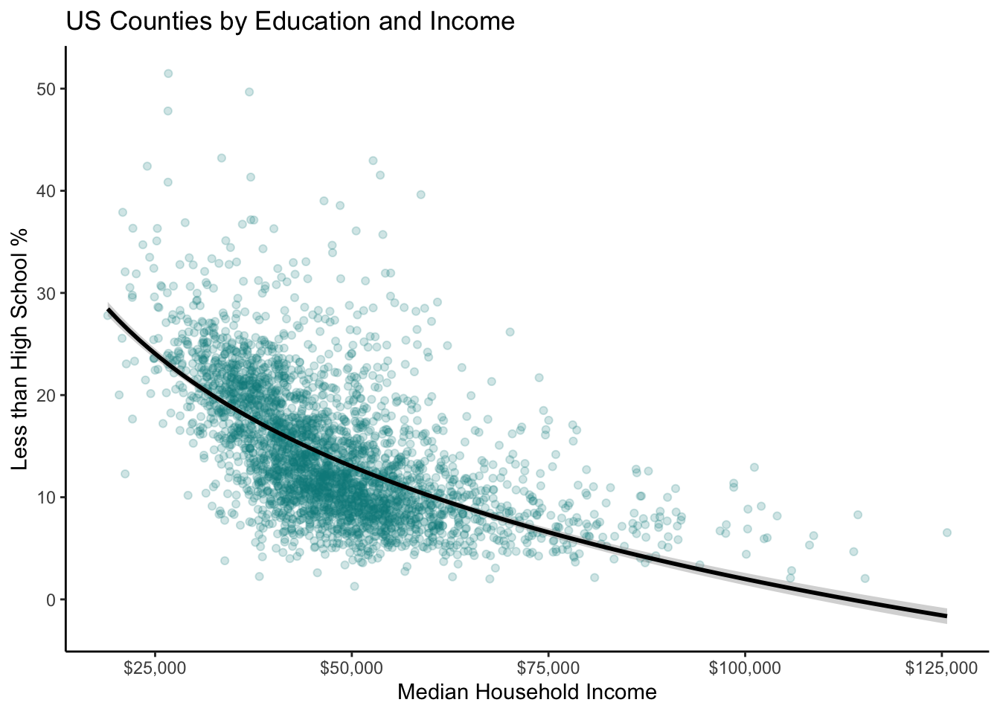
Not perfect, but now our fitted line is looking better!
4.3 Trivariate(!) Graphs
We are now experts are graphing one variable at a time, or two variables together, but what if we want to graph three or more variables at once? There are a number of ways to do this in ggplot as we will see below. However, first a word of caution: beware of cluttering your plots with too much information! It can be tempting to throw everything into a graph, but doing so can obscure the main point you’re trying to make. Always keep this in mind when going beyond graphing two variables at once.
4.3.1 Using Colors and Shapes
The county_elections data set does not have a lot of categorical variables for us to work with. So let’s create one!
county_elections <- county_elections |>
mutate(rural = ifelse(rural_pct > 50, "Rural", "Not Rural"))This code chunk uses the mutate function to create a new variable in the county_elections data set called rural. The variable rural takes the value “Rural” if rural_pct is greater than 50 and takes the value “Not Rural” if rural_pct is less than or equal to 50. It is usually not a good idea to dichotomize a continuous variable in this way (using a binary Rural/Not Rural as opposed to the county’s rural percentage). Doing so throws away valuable information that is almost always relevant to the final analysis. In this case we can justify our choice to create a categorical variable because it will make plotting multiple variables much easier.
Let’s now take our scatter plot showing the relationship between county median household income and education level, and color the points based on whether the county is rural or not. Doing so is as easy as adding color = rural to the aes() section in ggplot.
ggplot(county_elections) +
aes(x = median_hh_inc, y = lesshs_pct,
color = rural) + # Coloring points based on rural variable
geom_point(alpha = 0.5) + # Removed color from geom
labs(title = "US Counties by Education and Income",
x = "Median Household Income",
y = "Less than High School %") +
scale_x_continuous(label = scales::dollar) +
theme_classic()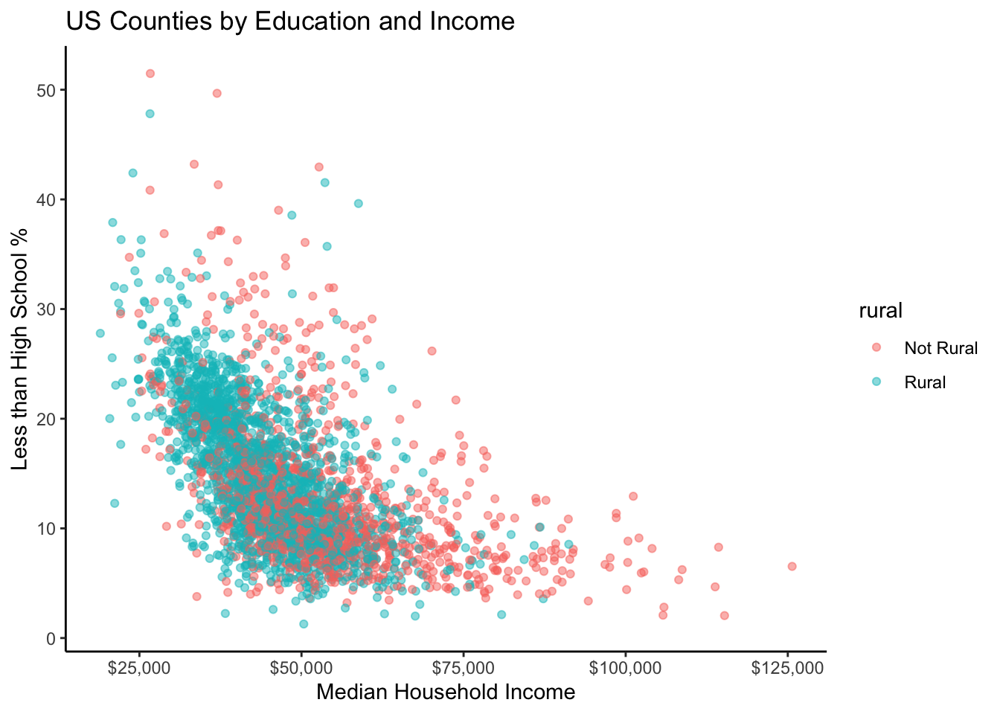
By default, ggplot even gives us a handy legend to tell us which color points correspond to which value of rural.
Now let’s try adding a third variable to our scatter plot which is continuous. One way to do this is with the size option in aes().
ggplot(county_elections) +
aes(x = median_hh_inc, y = lesshs_pct,
size = total_population) + # Changing size of points
geom_point(alpha = 0.2) +
labs(title = "US Counties by Education and Income",
x = "Median Household Income",
y = "Less than High School %") +
scale_x_continuous(label = scales::dollar) +
theme_classic()
Are we overdoing things with adding too much information to our graph? Possibly!
4.3.2 Using Facets to Graph Comparisons
One of ggplot’s most powerful features is “faceting”. Facets allow you to easily graph comparisons between different levels of a categorical variable in a clear manner by creating side by side subgraphs. To apply a facet to our ggplot graph we can simply add + facet_wrap(~ facet_variable).
ggplot(county_elections) +
aes(x = median_hh_inc, y = lesshs_pct) +
geom_point(alpha = 0.2, color = "darkcyan") +
labs(title = "US Counties by Education and Income",
x = "Median Household Income",
y = "Less than High School %") +
scale_x_continuous(label = scales::dollar) +
theme_classic() +
facet_wrap(~ rural) # Adding faceting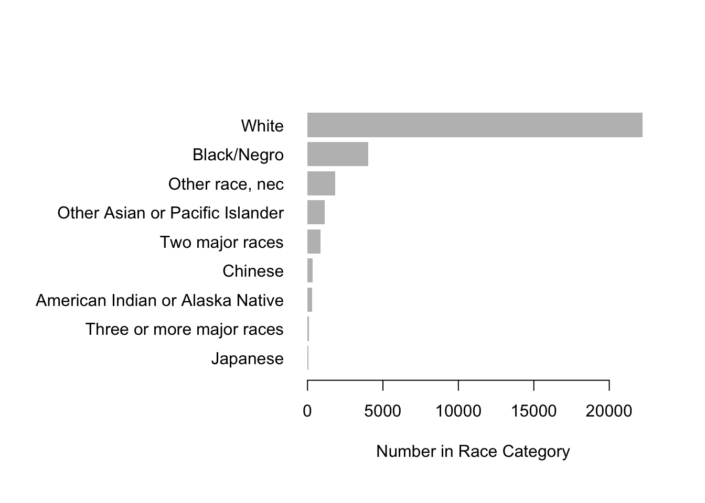
As you can see, faceting is so powerful for showing comparisons because it preserves the scale in each subplot. This might be a better choice rather than coloring each point and overlapping everything. We can control whether we want the subgraphs side-by-side or on top of each other with the nrow argument.
ggplot(county_elections) +
aes(x = median_hh_inc, y = lesshs_pct) +
geom_point(alpha = 0.2, color = "darkcyan") +
labs(title = "US Counties by Education and Income",
x = "Median Household Income",
y = "Less than High School %") +
scale_x_continuous(label = scales::dollar) +
theme_classic() +
facet_wrap(~ rural, nrow = 2)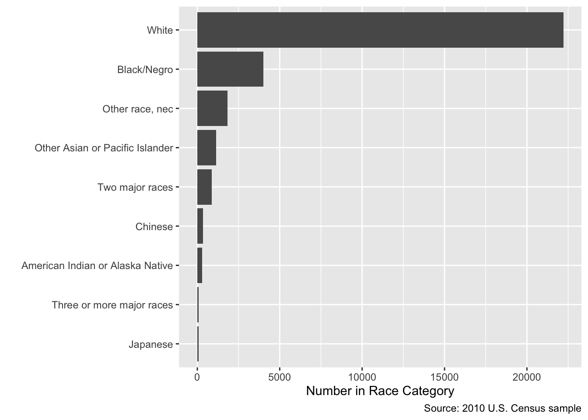
4.4 Choropleth Maps
Making maps in ggplot is relatively straightforward—and a much better idea than copying and pasting your data back and forth between R and a specialized program like ArcGIS. Choropleth maps show data broken down by geographic unit (in this case US counties). We will need to install an additional package urbnmapr to help ggplot make this type of graph. To install urbnmapr, run the following command in your Console.
We use the command devtools::install_github() because the developers of urbnmapr have not submitted their package to the official CRAN repository. So rather than using install.packages like we’re used to, we instead need to install the package directly from GitHub. A lot of excellent packages are not available on CRAN, but be aware that they might not have all the quality-control checks CRAN packages have.
Once you have the urbnmapr package installed, you can load it into R using:
We need to perform a couple data cleaning steps before the data is ready to map in ggplot. The first step is making our countyCode variable match the format of the corresponding US county code in the urbnmapr data. US counties are each given a unique 5-digit number called a FIPS code. However, at some point the “county_elections.csv” file was opened in Excel, which read the FIPS codes as numeric values thereby removing any 0’s from the start of each code. Never open your data in Excel! Now a bunch of the FIPS codes in our data are only 4-digits long instead of 5, which means they will not match the FIPS codes in the urbnmapr data. Luckily we can fix this using the Tidyverse. The function str_pad from the stringr package can be used to “pad” out a variable with a specific character until it becomes a specific size.
county_elections <- county_elections |>
mutate(county_fips = str_pad(countyCode, width = 5, pad = "0"))Next we need to join our county_elections data with the mapping data from urbnmapr. We will do this using a left_join command, which, if you are not familiar with, we will cover in much greater detail in a future lesson. The big idea here is that we have one data set with county-level variables, such as median household income, that we need to merge with a data set containing the geographic coordinate information for each US county.
Awesome! Now we are ready to make a map! Let’s check out the geographic distribution of population percentage without a high school diploma.
ggplot(map_data) +
aes(x = long, y = lat,
group = group, fill = lesshs_pct) +
geom_polygon(color = NA) +
# This second geom_polygon shows the state borders
geom_polygon(data = states, mapping = aes(long, lat, group = group),
fill = NA, size = 0.1, color = "white") +
# Making maps requires you to choose a geographic projection
coord_map(projection = "albers", lat0 = 39, lat1 = 45) +
# theme_void gives us a blank canvas
theme_void()Don’t worry if you are not yet able to understand every aspect of the ggplot code that produced this map. Try playing around with some of the arguments and see what happens to the map!
ggplot(map_data) +
aes(x = long, y = lat,
group = group, fill = lesshs_pct) +
geom_polygon(color = NA) +
geom_polygon(data = states, mapping = aes(long, lat, group = group),
fill = NA, size = 0.1, color = "white") +
coord_map(projection = "albers", lat0 = 39, lat1 = 45) +
# This creates a diverging color scale
# that is also colorblind friendly
scale_fill_viridis_c() +
labs(fill = "Less than High School %") +
theme_void() +
theme(legend.position = "bottom") Sometimes a diverging color scale is better for contrasting high and low value areas.